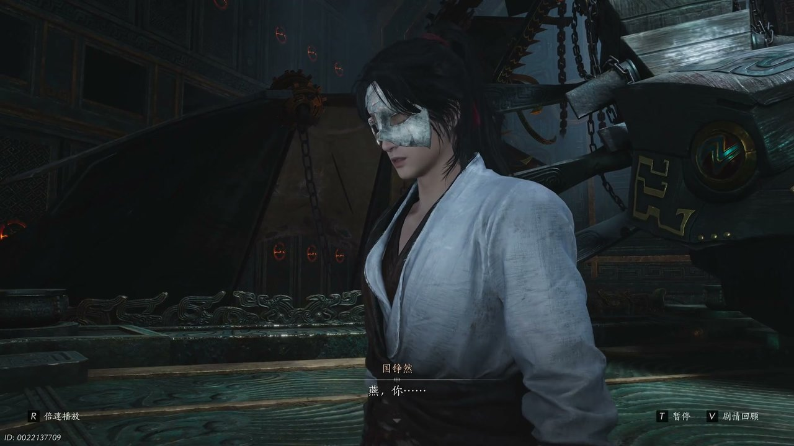
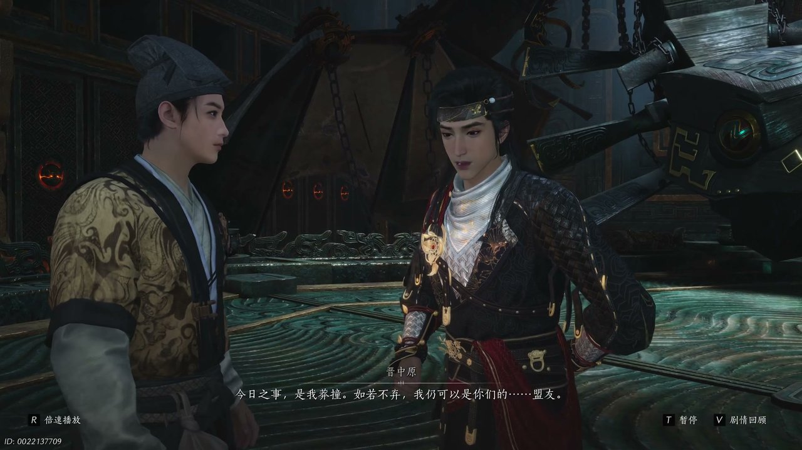
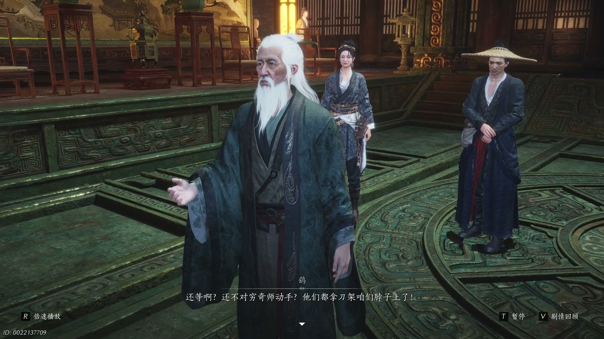
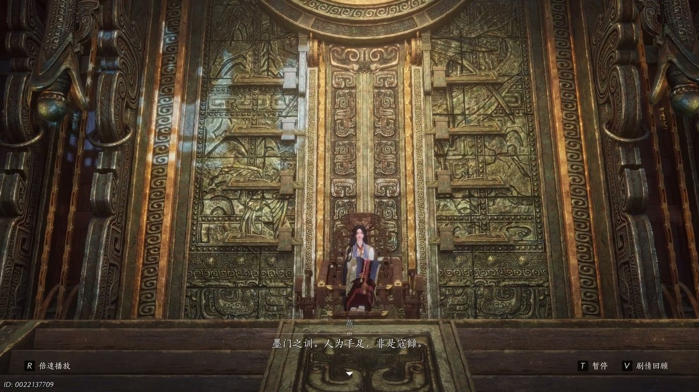
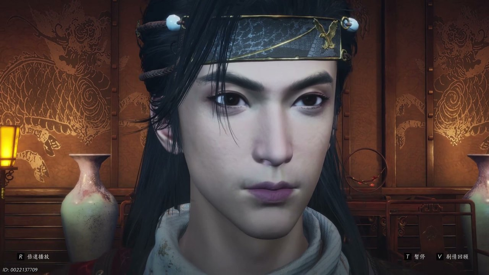
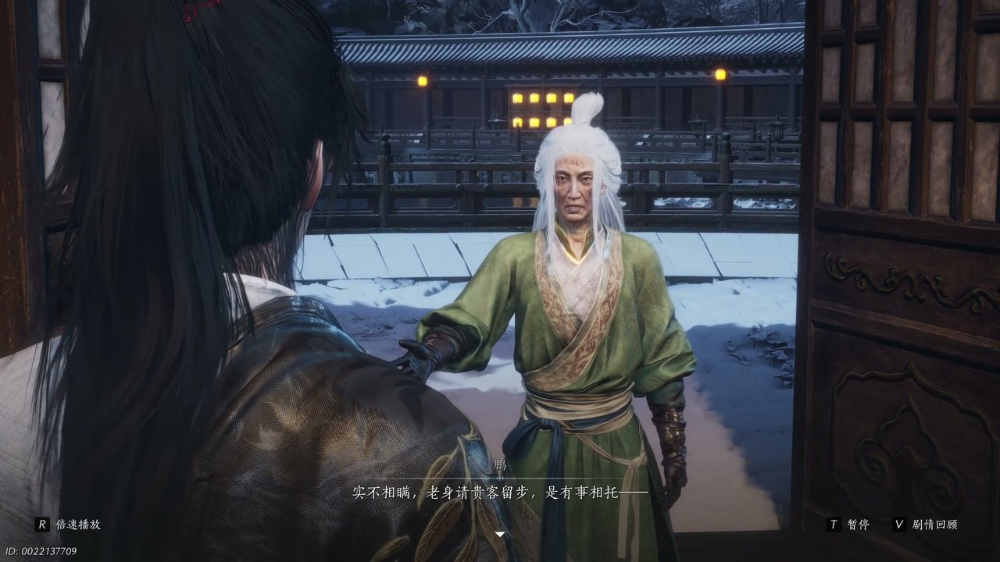

燕云背后的故事：第25集 流民
燕云背后的故事：第25集 流民

朋友们，上一集咱们说到——大眼迷阵激战、晋中原显露心机、穷奇师暗中潜伏；新来的朋友可能纳闷，少东家闯入迷阵之后，众人究竟能否脱身。简单说，少东家跟随巨子燕进入大眼迷阵，遭遇人偶操控的敌人袭击，冯继升也一同身陷险境。可他哪知道，晋中原早已和墨门长老暗中勾结，心思根本不在脱困之上。这不，众人勉强冲破迷阵包围，却发现墨山道山门之外已经挤满了流离失所的灾民。

迷阵之中火光四处翻涌，一道道烈焰虚影不断袭来，周围机关构件接连崩裂发出刺耳声响。少东家握紧兵器不断格挡，眉头紧锁沉声说道：“可恶又是这招。”冯继升站在一旁护住众人身形，面露疑惑开口：“莫非这人真能化身烈火，若真是如此，我们岂不是一辈子都捉不住他啊。”巨子燕抬手拂去身前飘散的烟尘，目光锐利扫视四周残破机关，缓缓开口解释：“并非本体是人偶操术，我知道他是谁。”她微微抬手示意众人聚拢，指尖轻敲石壁上隐藏的机关纹路，继续吩咐：“回大殿找帮手，我们去寻他。”少东家立刻应声答应，招呼冯继升一同跟上队伍，三人沿着迷阵密道快步前行，刚走出通道入口，便撞见等候已久的晋中原。

密道出口的石廊昏暗狭长，墙壁上刻满墨门古老符文，晋中原负手而立站在石阶中央，见到三人出现神色平静无波。少东家率先停下脚步，满脸警惕开口询问：“你又是哪位啊。”晋中原微微躬身行礼，语气诚恳：“今日之事恕我莽撞，如若不信，我仍可以是你们的盟友。”少东家挑眉盯着对方，语气带着几分质疑：“如翻书之人都能当盟友的，你要随我们同行，接下来就得听我们号令。”晋中原没有丝毫抗拒，坦然点头应允。行走途中晋中原低声自语，暗自盘算乌金并不在大雁迷阵之中，还打算独自前去寻找，言语间依旧藏着不为人知的心思，巨子燕隐约察觉异样，却并未当场戳破。

墨门大殿之外气氛骤然紧张，几位墨门长老齐聚庭院，神色凝重地商议对策。鹞长老面露急切，低声下令：“穷骑士动手，他们都拿刀架咱们脖子上了。”鹎长老神色忧虑，开口道出当下困境：“怎么听说巨子和人在大衍迷阵打起来了，穷奇师要是连大眼迷阵都来去自如，那墨山道还有什么是他们不知道的。”鹳长老站在首位，眉头紧锁思索应对之策，此时有墨门弟子匆匆前来禀报，神色慌张跪倒在地：“是穷奇师破坏了护山机关，桃源的迷雾散了。”消息传来众长老皆是一惊，大批流民已经冲破外围防线，两百余人越过街探崖，山外还有数百灾民不断朝着墨城涌来，墨门钱粮本就捉襟见肘，一时间所有人都陷入两难境地。

大殿之内长老们争执不休，厅堂之中木桌被重重一拍，气氛十分激烈。鹞长老态度强硬，主张炸断山间吊桥通路，紧闭墨城大门固守城池：“召回弟子，退守墨城，炸断山间吊桥通路，县城高筑日夜巡逻，绝技过不来。”巨子燕站在大殿中央，身姿挺拔，反驳长老的决断：“冬日将至，无处觅食，墨门不住，洞内而亡。君子皆爱世人，人为手足非是寇仇。”她向前踏出一步，目光坚定看着一众长老：“可我知手足若杀伤一我，我又该如何呢。”鹞长老依旧不肯退让，二人争执不休，晋中原在一旁静观其变，抓住时机提议暂代巨子之职处理流民危机，暂时稳住大殿纷乱的局面。

众人被安排在偏殿休憩，殿内烛火摇曳，隔绝了殿外的纷乱声响。少东家看向一旁的晋中原，语气严肃直言：“你心机过人，见微知著，与你同行，可要是这对招子和我不同心，我宁愿废了他也好过受他蒙骗。”晋中原非但没有慌乱，反而步步紧逼，抛出一连串质问：“桃源又是谁引你来的，谁把木鸟给你，叫你接近巨子的？谁放了一枚清白正直的棋子在巨子身边又陷他于千夫所指的绝境。”这番话直击少东家内心，让他一时语塞。巨子燕坐在一旁静静聆听，缓缓开口：“我虽愚钝，父亲教我信可信者，金公子天衣无缝，但我不信你。”三人之间信任裂痕彻底显现，气氛变得紧绷。

偏殿的门被轻轻推开，鹏长老缓步走入殿中，神色恭敬对着少东家与晋中原说道：“实不相瞒，老身请贵客留步是有事相托，如今燕虽无需抛头露面，可穷奇师怕是不会放过他，为此燕的身边须有几个信得过的护卫。”鹏长老拿出洛神下落作为酬劳，希望二人贴身保护巨子燕。少东家面露诧异：“你知道洛神的下落？”鹏长老轻轻摇头，只表示山中藏有洛神寻觅之物。晋中原主动请缨一同随行，鹏长老欣然应允，随后便以安排守卫为由将三人暂时禁足在院落之中。少东家满心不解，拉住晋中原追问其立场，晋中原坦诚自己受鹏长老嘱托，要协助巨子捉拿司南剑客以此稳固地位。
这一集看下来，我最大的感受就是墨门内外忧患交织，平静之下全是暗流。上一集里我们只知道迷阵暗藏杀机、晋中原立场不明、穷奇师四处作乱，到了这一集，流民围困山门、长老权力相争、乌金踪迹成谜三条全新线索浮现。司南剑客为何潜入墨城？晋中原究竟属于哪一方？墨门该如何安置数万流民？全部线索交织在一起，少东家决定带着巨子燕悄悄离开院落寻找司南剑客，晋中原选择一同前行。下一集，三人乔装躲避守卫追查。评论区大家觉得司南剑客会不会就是流民之中的人？关注不迷路，下一集解锁乔装潜行、深入流民营地的精彩剧情！
关于我们
📱 公众号名称：三天游戏
✍️ 作者：曾三天
扫码关注公众号，获取每日最新资讯

商务合作与版权
商务合作 / 内容投稿 / 品牌推广
请关注公众号「三天游戏」后台留言联系
版权声明：本文由作者整理，转载需注明出处。